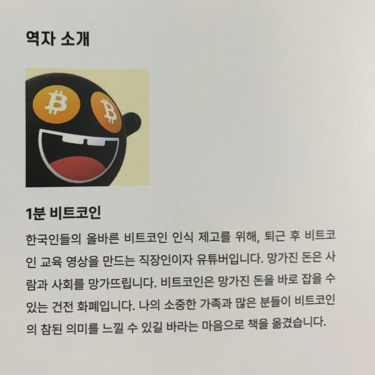

![[서평] 비트코인 낙관론 이미지 1](../../assets/images/note-40/p238-01.jpg)
어따 소머리 형님 ㅋㅋㅋㅋㅋ 여기계시네 밤 늦게 퇴근하고 집에 오니 사토시마켓에서 구입한 책이 와 있습니다 (네 그렇습니다 책을 파는 저라고 해서 공짜로 받는 것 따위는 없습니다 ㅋㅋ).
어제 배송한다고 했던거 같은데 생각보다 빨리 왔네요? 요즘 배송은 다 이렇게 빠른가 봅니다. 암튼 만족.

역자 : 1분 비트코인 집에 와서 애들하고 잠깐 놀아준 후 책을 읽기 시작했는데 분량이 많지 않아서 2시간 정도만에 다 읽었습니다. 생각보다는 얇은 분량입니다.
내용도 일반인들이 쉽게 쉽게 이해할 수 있도록 소개 형식으로 적어두어서 잘 모르는 사람들도 '아 이런게 있군' 정도로 이해할 수 있게 구성되어 있습니다.
비트코인에 대해서 전반적으로 다루면서도 얇은 분량을 가지고 있기 때문에 대략 비트코인에 대해서 궁금한 사람이라면한 번쯤 가볍게 읽어볼만한 책입니다만, 최근에는 인터넷 블로그 글이나 유투브를 통해서도 많이 볼 수 있는 일반적인 내용들이어서 특별하거나 하다는 생각은 들지 않습니다.
누군가에게 비트코인을 받아들이게 하기 위해 작업용(?) 으로 가볍게 사용할 수 있는 내용 같긴합니다. 그나저나 누가 비트코인 관련해서 재미있는 만화 형식으로는 안만드나? 만화로 만들면 훨씬 쉽고 재미있을 것 같긴 한데요. ㅎㅎㅎ
끝.